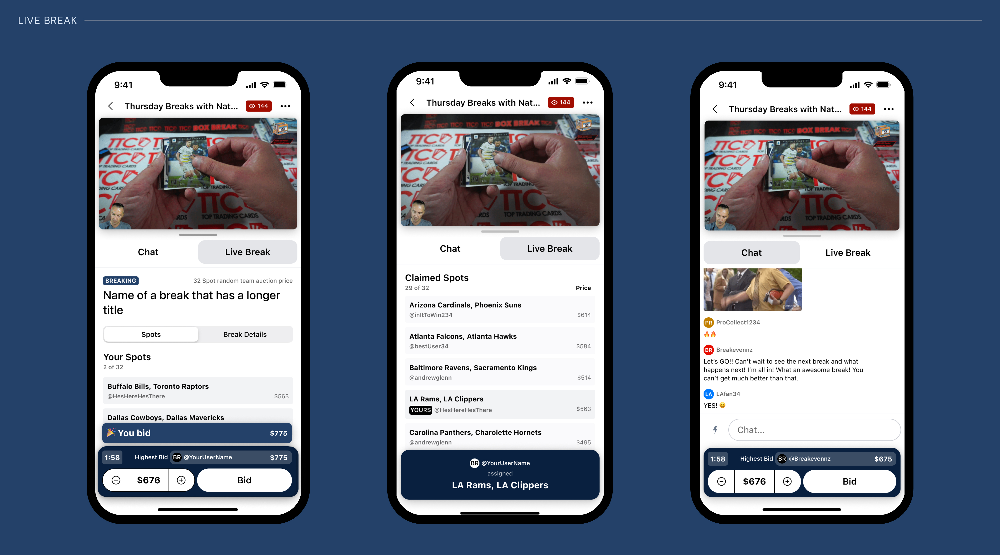
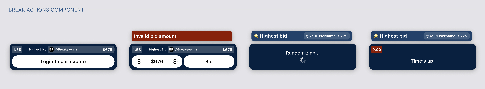
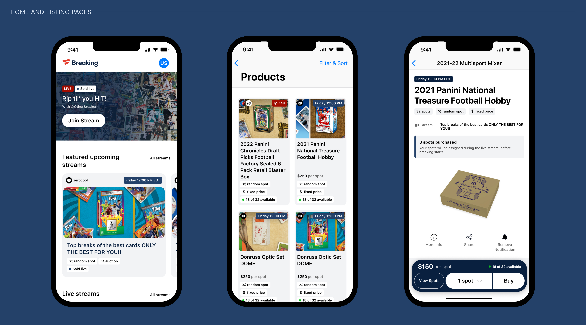
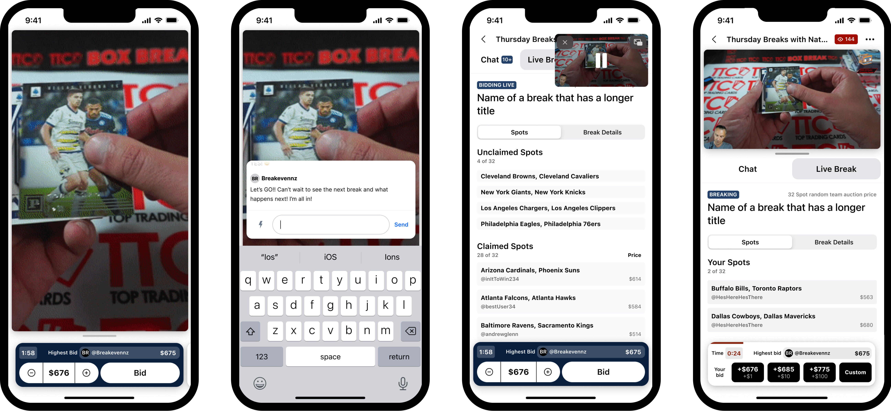

End-to-End Mobile Experience
A complete mobile app experience enabling users to fully participate in the breaking experience—from browsing upcoming breaks to live bidding and post-break results.
Designing an intuitive mobile experience for collectors on the Fanatics platform.

Fanatics Collectibles was building a purpose-built experience for "breaking"—the live-stream practice of opening packs of trading cards while an audience watches and participates. Collectors could obtain cards based on predefined rules by purchasing slots or bidding in live auctions.
Historically, breakers cobbled together a patchwork of tools: Twitch for streaming, spreadsheets to track winners. There was no platform designed specifically for the breaking community.
A few competitors—such as Whatnot—had emerged, but none fully met the community's needs. Fanatics saw the gap and set out to fill it with a dedicated platform built for how breakers and collectors actually operate.
Our team was brought in to design and build the mobile app that would complement the web experience Fanatics' engineering team was already developing—a parallel track with its own unique challenges.
"There was no platform purpose-built for breaks. Fanatics set out to fill that gap—and we were brought in to design the mobile experience from the ground up."
Before designing a single screen, our team needed to understand the industry. Through resources provided by the Fanatics team, a thorough review of the web work completed to date, and structured knowledge-sharing sessions, we developed a clearer picture of the problem space and the users we were designing for.
Based on our growing understanding of the product, we mapped a critical path to capture the essential user flows. The live-stream experience quickly emerged as both the most complex and the most critical flow to get right—it was the heart of the entire product.
We structured the work into two phases with a clear handoff point. Version 1 targeted the key flows within three months, following the web team's lead. Version 2 allowed us to explore concepts and experiments with fewer constraints—territory the web team hadn't yet designed or built.

The live-stream experience had to serve two fundamentally different users simultaneously—within the constrained real estate of a mobile interface. The design challenge was ensuring both personas got exactly what they needed without compromising the experience of the other.
Primarily interested in watching rather than bidding. Their attention is on the stream itself, the live chat, and current bid details—passive engagement that still requires clear, accessible information about what's happening in the break at any given moment.
Actively purchasing slots or bidding on cards in real time. Their focus is on break details, the stream, and the actions required for live bidding—a high-stakes, time-sensitive flow where friction or confusion could mean a missed opportunity.
How do we ensure both personas get what they need within the limited real estate of a mobile interface—without designing two entirely separate experiences?
The live-stream view was where we began our exploration. After organizing the essential content and feature requirements, we created low-fidelity wireframes and iterated rapidly based on team feedback. From there, we developed several distinct higher-fidelity concepts to evaluate which direction to move forward with.

A persistent bottom bar keeps critical actions—bidding and buying—within easy reach on every tab. It surfaces what's happening in the break at all times and provides a dedicated space for interactions that occur outside the video stream, giving both personas exactly what they need without cluttering the main view.
With a concept selected, we built out the final V1 designs—high-fidelity wireframes covering the key flows. Delivered without a finalized brand (Fanatics hadn't defined one for the app during our engagement), these designs used placeholder copy and visuals while communicating full UX intent.



While supporting developers through V1 implementation, we explored further concepts to enhance the experience. Most V2 explorations focused on the live-stream view and bidding and buying flows—the core of what makes breaking unique and engaging for the community.

We conducted weekly "breaks" with the internal team to test what we were building, ensure a seamless experience, and surface high-level issues before they became entrenched. These sessions proved invaluable for refining the bidding and buying flows and identifying edge cases we hadn't anticipated.
As we could not conduct user testing due to privacy concerns, every assumption about user needs and behaviour was documented so the Fanatics team could validate them quickly when future testing was planned.
As the project progressed, our scope expanded. We integrated more closely with the Fanatics product and design teams, moving beyond the mobile app to approach the work from a platform-wide perspective.
A significant part of our final delivery was designing a consistent, cross-platform bidding and buying experience. Together with the Fanatics team, we analyzed the different types of breaks, mapped all critical components, and created designs that ensured compatibility across web and mobile while covering every relevant scenario.


In the end, this engagement produced outcomes that extended well beyond the original brief—touching product direction, team capability, and the foundation of a scalable design system.
A complete mobile app experience enabling users to fully participate in the breaking experience—from browsing upcoming breaks to live bidding and post-break results.
We delivered the scaffolding of a pattern library that allows designers to work faster and more consistently, giving Fanatics a base to expand into a full design system in the future.
As we became deeply embedded within the Fanatics team, our work grew far beyond the mobile app we were originally brought in to support—a reflection of the trust we built over six months.
We helped the Fanatics team level up through stronger structure, improved design processes, and a broader cross-platform approach—leaving them better equipped than when we arrived.
Whether you're launching a new product, rethinking an existing one, or need a design partner who can move fast without losing quality—I'd like to hear about it.